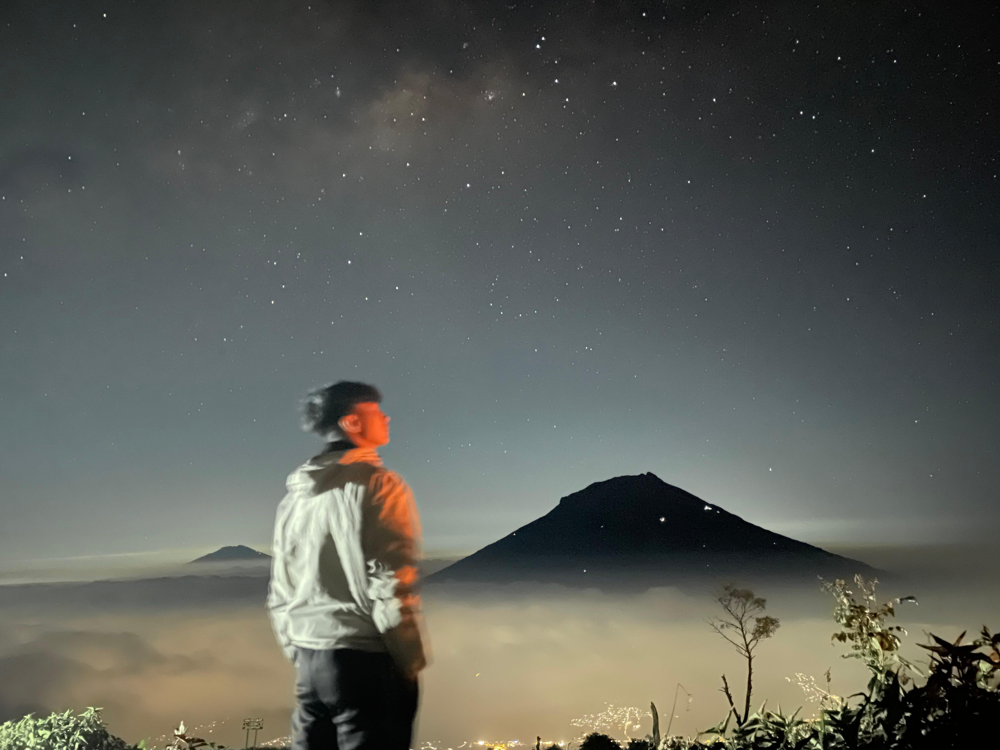

Travelling merupakan salah satu kegiatan yang paling saya sukai. Bagi saya, perjalanan bukan hanya tentang mengunjungi tempat baru, tetapi juga tentang menikmati suasana, melihat keindahan alam, dan mendapatkan pengalaman yang tidak bisa ditemukan dalam kehidupan sehari-hari. Saya lebih senang menghabiskan waktu di tempat-tempat yang memiliki pemandangan alam seperti pegunungan, pantai, air terjun, dan perbukitan. Saya percaya bahwa setiap perjalanan memiliki cerita, dan setiap tempat yang dikunjungi selalu memberikan pengalaman baru. Karena itu, saya selalu menikmati setiap perjalanan yang saya lakukan,
baik bersama teman, keluarga, maupun sendiri.Sejak dulu saya suka bepergian ke berbagai tempat. Bagi saya, perjalanan adalah cara untuk tetap menjaga keseimbangan hidup dan menemukan atau membuat memori yang tak terlupakan. Saya sangat menikmati perjalanan yang membawa saya lebih dekat dengan alam, travelling bukan hanya tentang seberapa jauh tempat yang dikunjungi, tetapi tentang pengalaman yang didapat selama perjalanan. Bertemu dengan tempat baru, teman-teman baru, mencoba hal-hal baru, menikmati suasana, dan menghabiskan waktu bersama orang-orang terdekat menjadi bagian yang membuat perjalanan terasa lebih berkesan. saya juga suka mengabadikan momen-momen selama perjalanan melalui foto dan video. Menurut saya, sebuah foto dan video dapat menjadi pengingat akan pengalaman dan cerita yang pernah dilalui. Setiap perjalanan memiliki suasana dan cerita yang berbeda, sehingga selalu ada hal baru yang bisa saya temukan.

Gunung Sindoro
Connect with me on social media
Ada beberapa tempat yang ingin saya kunjungi, terutama tempat-tempat yang menawarkan keindahan alam dan suasana yang berbeda dari keseharian. Saya ingin melihat sendiri apa yang selama ini hanya saya temukan melalui foto, merasakan udaranya, mendengar suasananya, dan menikmati setiap perjalanan tanpa terburu-buru. Bagi saya, ada sesuatu yang menarik dari datang ke tempat yang belum pernah dikunjungi, karena selalu ada pengalaman kecil yang mungkin tidak direncanakan tetapi justru menjadi bagian yang paling berkesan. berikut beberapa tempat yang ingin saya kunjungi:
| Nama Tempat | Aktivitas | Alasan |
|---|---|---|
| Ranu Kumbolo | Hiking dan Camping | Menikmati Surganya Gunung Semeru |
| GN.Merbabu | Hiking dan Camping | Menikmati hijaunya sabana Gunung Merbabu |